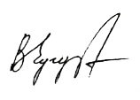

ПРЕДИСЛОВИЕ
Произошедшая 26 апреля 1986
г. авария на Чернобыльской АЭС по масштабам, сложности и долговременным последствиям
является самой крупной и тяжелой катастрофой за всю мировую историю использования
атомной энергии.
Большие количества радиоактивных веществ из активной
зоны реактора были выброшены в атмосферу и затем выпали в основном тремя крупными
«пятнами» в Республике Беларусь, на Украине и западных областях России. Общая
площадь загрязненных территорий (по цезию-137 - более 1 Ки/км2) составляет почти
130 тыс. км2.
Зоны радиоактивного загрязнения после чернобыльской
катастрофы формировались в зависимости от характера выбросов поврежденного реактора
и метеоусловий. В период интенсивных выбросов (26 апреля - 5 мая 1986 г.) в
разные дни в истекающей струе состав радионуклидов отличался и по мощности,
и по их типу. В соответствии с метеоусловиями в первые три дня радиоактивные
облака перемещались в сторону Республики Беларусь. К 30-му апреля направление
ветра сменилось на южное и восточное. Соответственно потоку воздушных масс,
загрязненных радионуклидами, происходило и формирование радиоактивного следа
на местности. При этом, самые легкие радиоактивные частицы и газы поднялись
в верхние слои атмосферы. Они осаждались очень медленно (от нескольких месяцев
до года), успев за это время не раз обогнуть земной шар, распространившись повсеместно
в северном полушарии. Более тяжелые аэрозоли расположились в приземном слое
воздуха, откуда опустились через разные промежутки времени на земную поверхность.
В первый послеаварийный период (апрель-май 1986 г.)
радиационная обстановка в основном, определялась короткоживущими радионуклидами,
и в первую очередь йодом-131. После естественного распада коротко- и средне-живущих
радионуклидов основную опасность представляют радионуклиды цезия-137, стронция-90
и плутония.
Для Республики Беларусь последствия чернобыльской
катастрофы оказались особенно тяжелыми. Здесь радиоактивному загрязнению подверглись
23 % территории, на которой оказались 3 678 населенных пунктов и 20 % населения
республики.
Общая площадь с плотностью загрязнения цезием-137 свыше
1 Ки/км2 охватила 3,2% европейской территории бывшего СССР, а более 0,2 Ки/км2
- 23%. В Российской Федерации загрязнение цезием-137 свыше 1 Ки/км2 зафиксировано
на территории 19 областей. Наиболее загрязненными оказались Брянская, Тульская,
Калужская, Рязанская и Пензенская области. На загрязненных, радионуклидами территориях
в Российской Федерации проживает около 2,3 млн. человек.
Сегодня, спустя 15 лет после этой катастрофы, нет четкого
и однозначного ответа на вопрос - в чем кроются причины аварии и кто виноват
в ее происшествии? Ряд специалистов имеют свое мнение. Так, например, академик
Л.А. Ильин в своей книге «Реалии и мифы Чернобыля» (стр. 79), анализируя всю
цепь событий, приведших к аварии, высказывает мнение о том, что основная причина
катастрофы на 4-м блоке заключена изначально в дефектах проекта и конструкции
реактора РБМК и, особенно, в присущем этому типу аппаратов так называемом положительном
паровом, коэффициенте реактивности.
Особую ценность для будущего поколения, видимо, будет
представлять мнение непосредственного участника событий на Чернобыльской станции.
Поэтому Издательство «Научтехлитиздат» предлагает читателям книгу, которая написана
бывшим заместителем главного инженера ЧАЭС А.С. Дятловым. Надеемся, что на многие
вопросы читатели получат наиболее полные и исчерпывающие ответы.
| В.В. Ломакин Заместитель директора Государ- ственного научно-технического центра по ядерной и радиационной безопасности Украины |
Т.Г. Самхарадзе Гл. редактор журнала «Экологические системы и приборы», проф., д-р техн. наук, акад. АИН РФ |
УВАЖАЕМЫЙ ЧИТАТЕЛЬ!
Вашему вниманию предлагается книга, автором
которой является инженер, непосредственный участник в событиях крупнейшей техногенной
катастрофы - аварии на 4-м ядерном энергоблоке ЧАЭС.
Предлагаемая книга поможет непредубежденному читателю,
и предубежденному также, составить или откорректировать собственное мнение о
причинах катастрофы, правомерности обвинений оперативного персонала ЧАЭС, официально
объявленного единственным виновником катастрофы. Обращаясь к Вам, дорогой читатель,
я прошу набраться терпения и прочитать эту книгу, а не отложить ее в сторону,
руководствуясь только тем, что Вы работаете в другой области и не имеете достаточных
знаний в области теории реакторов и эксплуатации энергетических ядерных установок.
Речь идет о более важном, о моральном факторе оценки этого события, чести и
достоинстве людей, волею судьбы вовлеченных в этот процесс. Многих из непосредственных
участников уже нет с нами. Но для оставшихся на сегодняшний день живых свидетелей,
для близких погибших, для коллектива ЧАЭС оценка общества небезразлична.
Сегодня невозможно оценить ту меру вреда, нанесенного
персоналу всей отрасли ядерной энергетики фактом официального объявления персонала
и технического руководства ЧАЭС единственным виновником катастрофы. Остался
«за кадром» тот факт, что этот персонал не разбежался, спасая свою жизнь, а
остался на своих рабочих местах, выполняя предписанные ему функции, делая все
возможное и невозможное для смягчения последствий аварии. Этот же персонал,
восстанавливая, проводил модернизацию систем безопасности, недостатки в которых
и стали причиной катастрофы, а затем эксплуатировал эти блоки до последнего
времени. Вред существующей и на сегодняшний день «высокой официальной оценки»
действий персонала состоит в том, что при любой экстремальной ситуации на ядерном
объекте персонал будет стоять перед выбором - уйти ли с рабочего места, отказаться
от борьбы или продолжить работу, рискуя здоровьем, жизнью и быть обвиненным
во всех «грехах тяжких».
Волею судьбы мне пришлось работать под руководством
Анатолия Степановича Дятлова и на судостроительном заводе в г. Комсомольске-на-Амуре,
и на ЧАЭС. С благодарностью вспоминаю то время, время совместной работы. Нет
необходимости давать ему характеристику. Читая книгу, Вы увидите цельность характера
и незаурядное гражданское мужество этого Человека!
И сегодня на ЧАЭС работает персонал, который прошел
«школу Дятлова» и с благодарностью помнит об этом.
13 декабря 1995 г. А.С. Дятлова не стало,
а 15 декабря 2000 г. досрочно, решением правительства Украины, прекращена эксплуатация
третьего, последнего из находившихся в эксплуатации, энергоблока. В прессе и
на телевидении была организована шумная кампания по поводу этого события. Однако
это событие не стало праздником для персонала. Дежурная смена на блочном щите
управления в знак протеста одела траурные повязки. Истории еще предстоит дать
правдивую и непредвзятую оценку всех событий на данном предприятии и его персоналу.
Итак, что же сегодня делает персонал ЧАЭС?! Необычная
тишина в турбинном зале, прохладно и тихо в центральном зале, персонал пытается
понять свое место в свете формулировки ОПБ-88 - «Заключительный этап эксплуатации
атомной станции является этапом снятия ее с эксплуатации...»
Дорогой читатель, заканчивая это вступление, хочу отметить
следующее. В одном из репортажей центрального телевидения, посвященного снятию
с эксплуатации ЧАЭС, вновь прозвучала «официальная версия». Именно это и заставило
меня взяться за перо. Не знаю, что еще нужно написать, сделать, чтобы эта совершенно
лукавая «официальная версия» канула в лету!
Нет сомнения, что лежащая перед вами книга является
весомым камнем на наукообразное нагромождение псевдофактов и фактов, лжи и несправедливости,
выстроенных в некий барьер со стороны ученых мужей и государственных ведомств.
Именно это «выстроенное» сооружение ставило своей задачей переложить всю меру
ответственности на персонал ЧАЭС, на автора книги, на инженеров, посмевших иметь
собственное мнение, не совпадающее с мнением докторов, академиков, заботящихся
о чести своего мундира.
В принципе ожидание того, что в этом вопросе будет вынесен
вердикт Генеральными прокурорами России и Украины, не оправдывается. Им сегодня
не до этого. Но может быть национальные Академии наук России и Украины нашли
бы в своих рядах мужественных людей, способных высказаться по этому вопросу,
учитывая, что при этом не требуется фундаментальных исследований. Однако ни
у кого нет желания оглянуться назад и посмотреть на сложившуюся на то время
инженерную практику, а может быть и что-то другое. Но нет сомнения, что в этом
вопросе должен быть вынесен вердикт, который позволит положить эту трагедию
в ящик истории. Хотелось бы увидеть такой документ при жизни. Не будем терять
надежду!
| Инженер Чернобыльской атомной электростанции |
 | В.А. Чугунов |